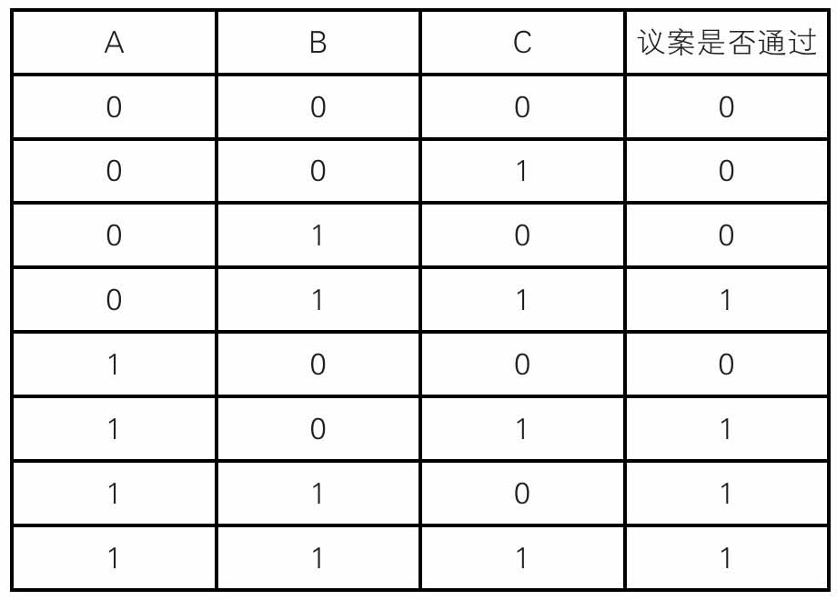
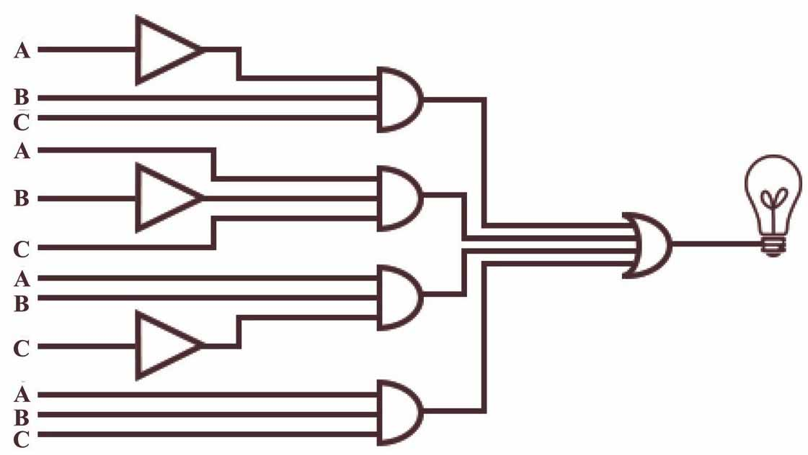
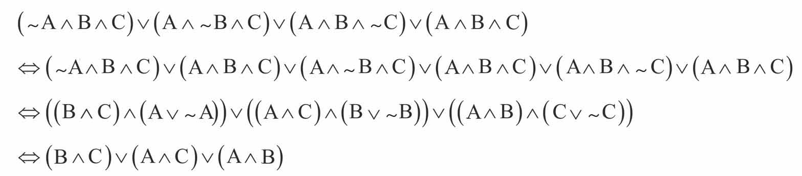
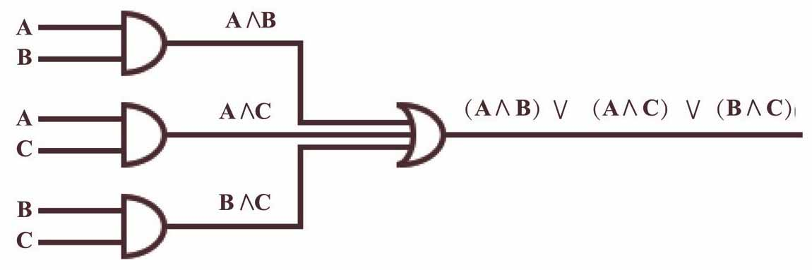

委员会要对现有税收议案进行投票，如果一项议案要获得委员会的通过，3张选票中必须至少有2张赞成票。
现在要设计一个这样的电路，它以三位投票人各自的投票结果作为输入，以议案是否通过作为输出。用1表示投票人投赞成票或议案获得通过，0表示投票人反对、弃权或者议案未获通过，电路真值表如下表（A、B、C分别表示以下三个命题：A投赞成票、B投赞成票、C投赞成票）：

以下四种情况中的任一种为真都可以使议案通过：
1）A反对，B、C赞成，对应的逻辑表达式为：～A∧B∧C；
2）B反对，A、C赞成，对应的表达式为：A∧～B∧C；
3）C反对，A、B赞成，对应的表达式为：A∧B∧～C；
4）A、B、C都赞成，对应的表达式为：A∧B∧C。
所以表决器的输出是：
（～A∧B∧C）∨（A∧～B∧C）∨（A∧B∧～C）∨（A∧B∧C）
对应的电路是这样的：

一般说来，考虑到设计与制造电路的紧凑性和经济性，如果功能一致，我们希望某个电路所包含的“门”尽可能少。
减少芯片上“门”的数量，可以使电路更可靠、并降低成本。
采用逻辑等价演算的方法可以简化上面的电路图，化简的方法可以是这样的：

最后通过交换律得到化简的逻辑表达式：（A∧B）∨（A∧C）∨（B∧C）。
这样一来，对应的电路可以简化成这样：

对于一些更复杂的电路，化简的过程往往很复杂。人们希望有一种系统化的化简方法，卡诺图（Karnaugh Map）的出现，在当时解决了这个问题。
卡诺图看上去像方格图，填入方格的是一些特定的逻辑表达式，通过相邻方格的合并化简，可以将逻辑表达式化简。
不过，当输入变量超过4个，卡诺图简化电路就显得不那么灵便了。
简化电路的另一种方法还有奎因（Willard Van Orman Quine）提出的一种列表法。1956年，麦克拉斯基（Edward McCluskey）改进了这种方法。